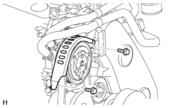
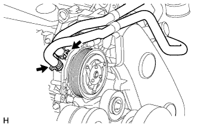
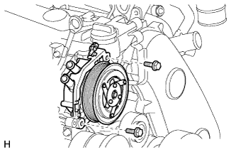

НАСОС ОХЛАЖДАЮЩЕЙ ЖИДКОСТИ ОТОПИТЕЛЯ > СНЯТИЕ |
| 1. СНИМИТЕ ВЕРХНЕЕ УПЛОТНЕНИЕ КРОНШТЕЙНА РАДИАТОРА |
Освободите 13 фиксаторов и снимите верхнее уплотнение кронштейна радиатора.
| 2. ОТСОЕДИНИТЕ ПРОВОД ОТ ОТРИЦАТЕЛЬНОГО ВЫВОДА АККУМУЛЯТОРНОЙ БАТАРЕИ |
| 3. СНИМИТЕ ЗАЩИТУ КАРТЕРА ДВИГАТЕЛЯ № 1 В СБОРЕ |
Выверните 4 болта и снимите защиту картера двигателя № 1.
| 4. СЛЕЙТЕ ОХЛАЖДАЮЩУЮ ЖИДКОСТЬ ДВИГАТЕЛЯ |
Ослабьте пробку сливного крана радиатора.
 |
Слейте охлаждающую жидкость, сняв пробку расширительного бачка, а затем с помощью ключа снимите вентиляционную пробку.
Ослабьте пробку сливного крана блока цилиндров.

| *1 | Бачок радиатора | *2 | Вентиляционная пробка |
| *3 | Пробка сливного крана радиатора | *4 | Пробка сливного крана блока цилиндров |
| 5. СНИМИТЕ РАСШИРИТЕЛЬНЫЙ БАЧОК РАДИАТОРА |
 |
Отсоедините перепускной шланг охлаждающей жидкости № 1, отсоедините 2 зажима от кожуха вентилятора.
Отсоедините перепускной шланг охлаждающей жидкости № 2 от расширительного бачка радиатора.
Выверните 3 болта и снимите расширительный бачок радиатора.
| 6. СНИМИТЕ ПРИЖИМ АККУМУЛЯТОРНОЙ БАТАРЕИ |
Отверните 2 гайки и снимите прижимную планку аккумуляторной батареи.
| 7. СНИМИТЕ АККУМУЛЯТОРНУЮ БАТАРЕЮ |
| 8. СНИМИТЕ ЛОТОК АККУМУЛЯТОРНОЙ БАТАРЕИ |
| 9. СНИМИТЕ ШЛАНГ ВОЗДУШНОГО ФИЛЬТРА № 1 |
 |
Ослабьте 2 зажима шланга и снимите шланг воздушного фильтра № 1.
| 10. СНИМИТЕ КРЫШКУ ВОЗДУШНОГО ФИЛЬТРА В СБОРЕ |
 |
За исключением моделей, предназначенных для эксплуатации в холодном климате:
Открепите 2 зажима и отсоедините разъем датчика массового расхода воздуха.
| *A | За исключением моделей, предназначенных для эксплуатации в холодном климате |
| *B | Для моделей, предназначенных для эксплуатации в холодном климате |
Для автомобилей, предназначенных для эксплуатации в холодном климате:
Открепите 3 зажима и отсоедините разъем датчика массового расхода воздуха.
Освободите 4 зажима и снимите крышку воздушного фильтра.
| 11. СНИМИТЕ ФИЛЬТРУЮЩИЙ ЭЛЕМЕНТ ВОЗДУШНОГО ФИЛЬТРА В СБОРЕ |
| 12. СНИМИТЕ КОРПУС ВОЗДУШНОГО ФИЛЬТРА В СБОРЕ |
 |
Выверните 3 болта и снимите корпус воздушного фильтра.
| 13. СНИМИТЕ ВЫХОДНОЙ ПАТРУБОК КОМПРЕССОРА |
 |
Отсоедините 3 зажима жгута проводов.
Выверните болт и снимите кронштейн жгута проводов.
 |
Ослабьте зажим шланга, выверните 2 болта и снимите выходной коленчатый патрубок компрессора.
| 14. СНИМИТЕ ПОЛИКЛИНОВОЙ РЕМЕНЬ ВЕНТИЛЯТОРА И ГЕНЕРАТОРА |
|  |
Выверните 2 болта и снимите передний кронштейн подогревателя.
Снимите поликлиновой ремень вентилятора и генератора (Нажмите здесь).
| 15. СНИМИТЕ ВЯЗКОСТНЫЙ ПОДОГРЕВАТЕЛЬ С ЭЛЕКТРОМАГНИТНОЙ МУФТОЙ В СБОРЕ |
Отсоедините разъем вязкостного подогревателя.
|  |
С помощью плоскогубцев зажмите захваты фиксаторов и сдвиньте 2 фиксатора.
Отсоедините перепускной шланг охлаждающей жидкости и шланг охлаждающей жидкости.
|  |
Выверните 2 болта и снимите отопитель в сборе.
| 16. СНИМИТЕ КРОНШТЕЙН ВЯЗКОСТНОГО ПОДОГРЕВАТЕЛЯ № 1 |
 |
Выверните 4 болта и снимите кронштейн вязкостного подогревателя № 1.